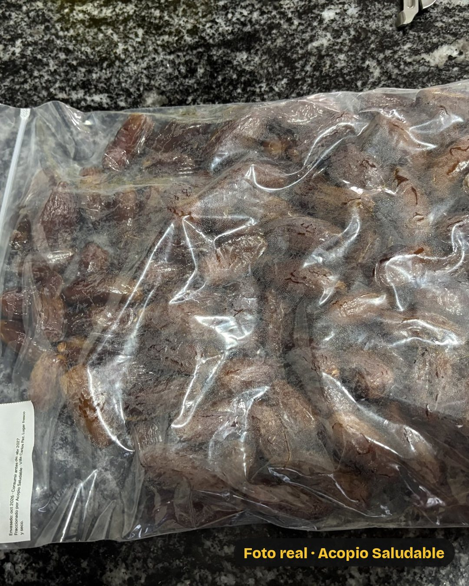
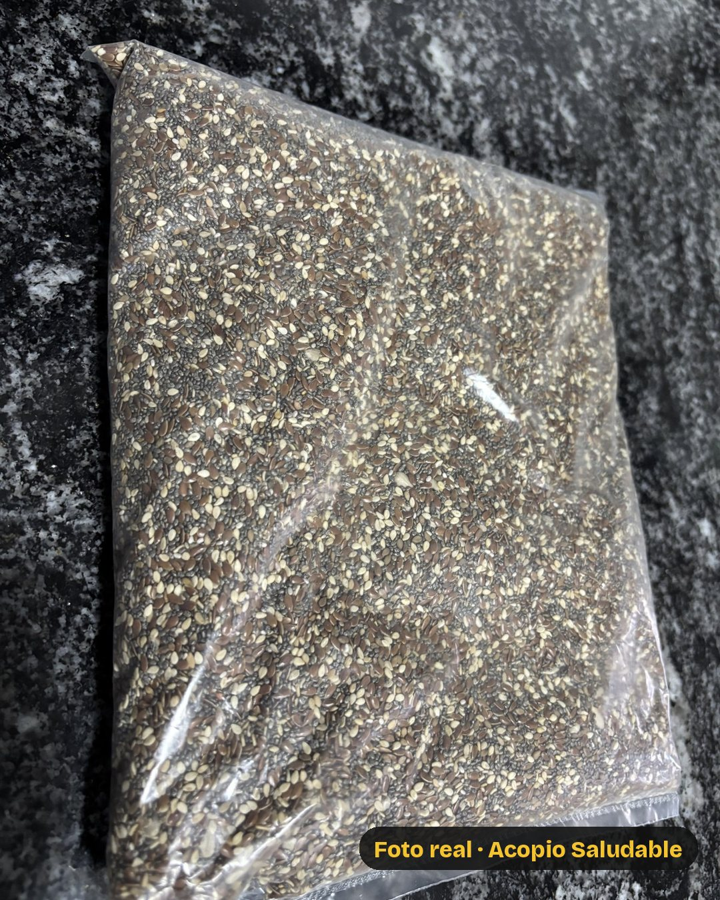

Acopio Saludable
3 kilos, $22.000
Envío sin cargo en Carlos Paz y la zona

1 kg Pasas de uva
$5.900

1 kg Dátiles con carozo
$10.900

1 kg Mix de semillas
$5.200
Sumás $6.500 y es la Despensa de $28.500
te llevás además 1 kg de mix con cajú y girasol
WhatsApp 3541 51-9630
Pagás antes de la entrega: transferencia o Mercado Pago